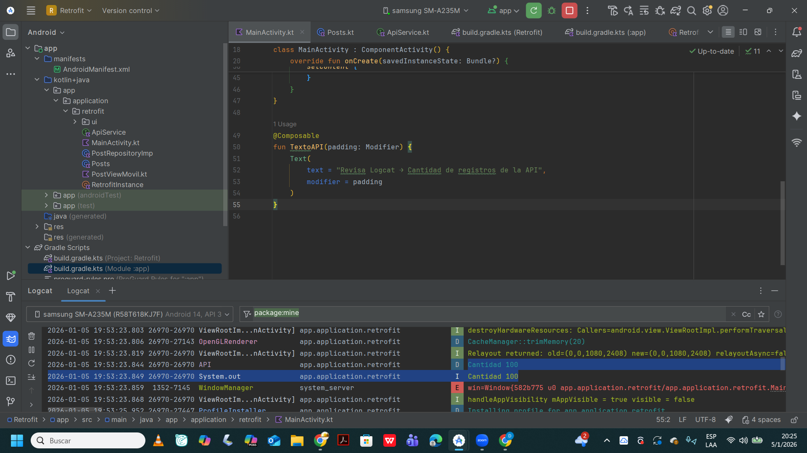
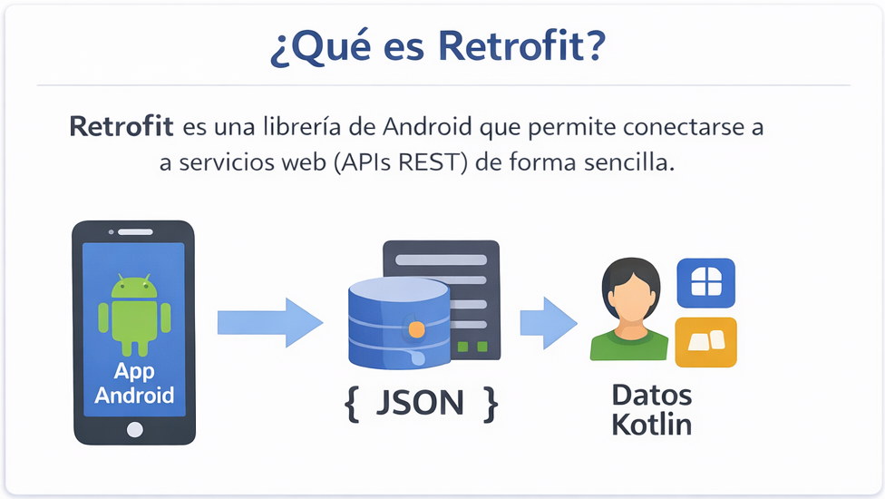
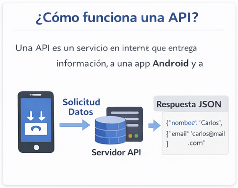
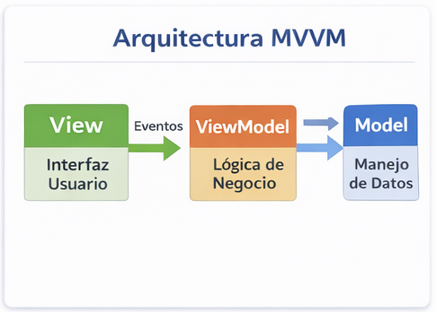
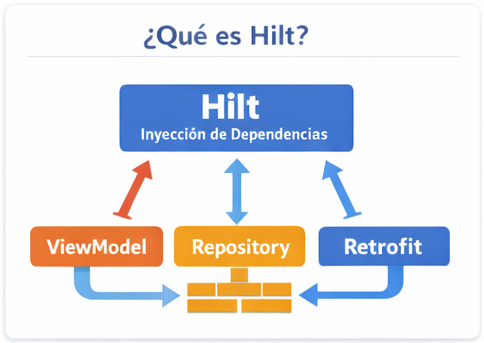
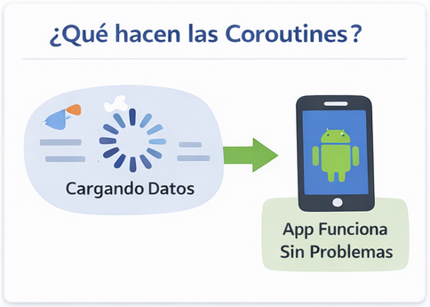
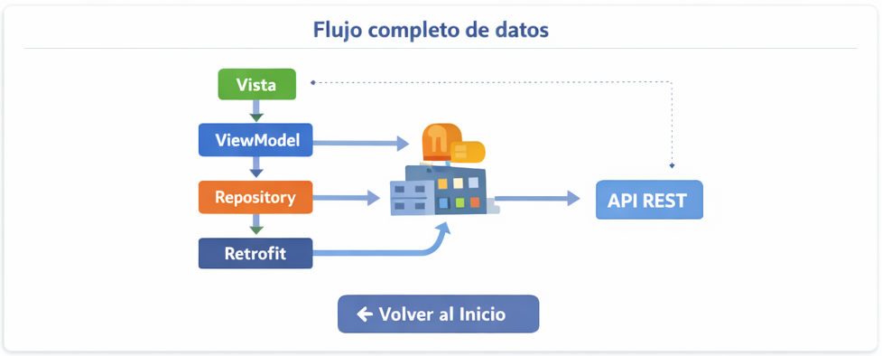

Consumo de APIs en Android con arquitectura profesional
Esta captura muestra el funcionamiento real del consumo de datos desde una API utilizando Retrofit dentro de la aplicación Utility.
Retrofit es una librería de Android que permite conectarse a servicios web (APIs REST) y obtener datos en formato JSON para convertirlos en objetos Kotlin.
Una API es un servicio en Internet que entrega información a una aplicación. Android envía una solicitud y el servidor responde con datos.
MVVM organiza el código en tres capas: Model, View y ViewModel. Esto evita mezclar la lógica con la interfaz.
Hilt crea y administra automáticamente los objetos de Retrofit, Repository y ViewModel sin escribir código repetido.
Las Coroutines ejecutan tareas en segundo plano para que la app no se congele mientras se descargan datos.
Así viajan los datos desde Internet hasta la pantalla del usuario.
